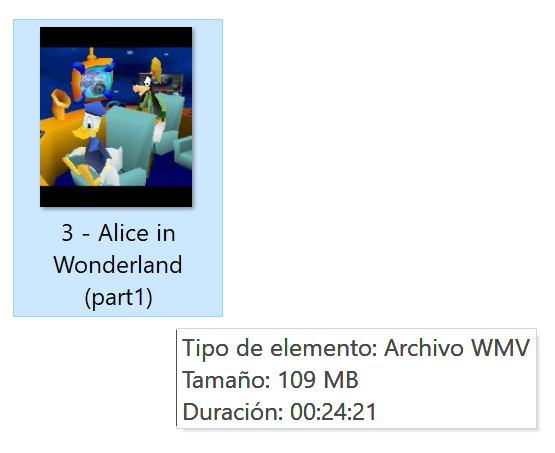
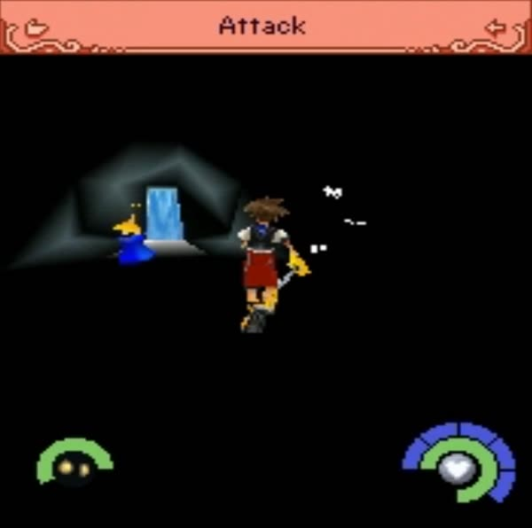
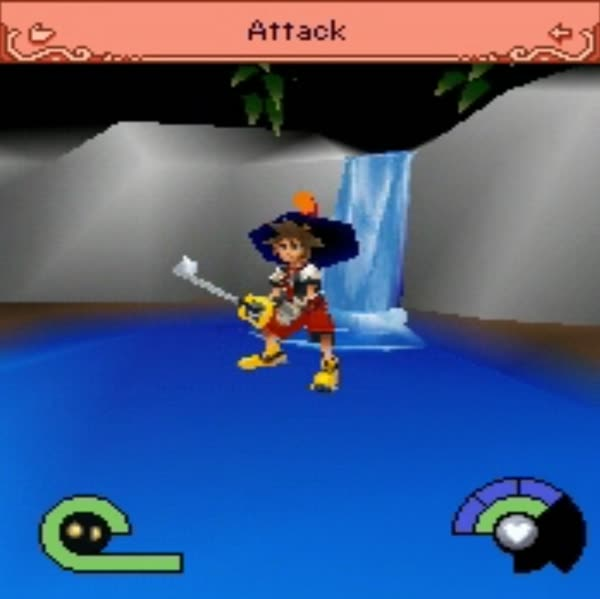
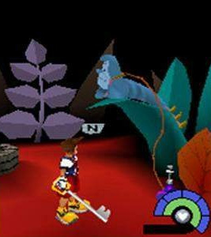
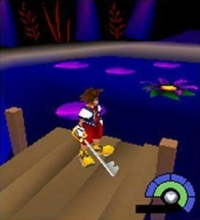

The search for chapter 2
New: a recording of Wonderland exists
On August 31, 2026, Spanish games writer Pablo González (@Caith_Sith on X) posted a 16-second clip of the lost chapter, the first moving footage of Wonderland ever made public. A giant flower talks to Sora in a dark garden:
“I'm the last flower left in this sad little garden.” “What happened to the other flowers?” “The Queen of Hearts stole all the seeds. Please find them before I wilt from loneliness.”






Video and pictures by Pablo González (@Caith_Sith), from his post on X, shown unedited with his watermark to document the lost chapter. All credit for finding and recording them is his. Pablo, if you would like them credited differently or taken down, email us.
He also showed a 24-minute video file, “3 - Alice in Wonderland (part1)”, reportedly recorded in 2014 for an article that was never written. We, and members of the Kingdom Hearts preservation community, have reached out to him but have not heard back yet. He is said to be holding the recording for the series' 25th anniversary, so we hope to learn more then.
A video is not the game, though: Wonderland still can't be played without its files from a phone. The search goes on.
Find Wonderland
Do you still have the phone?
The phones held one chapter at a time, and starting the next chapter deleted the old one. If someone stopped playing while Alice in Wonderland was installed, that phone may still hold the only copy.
- Any Verizon phone from the V CAST years (2005 to 2012) is a candidate
- The game launched on the LG VX8000, Samsung SCH-a890 and UTStarcom CDM8940; the LG VX8100 and VX8300 have the same 176×220 screen. The model number is printed under the battery
- Kingdom Hearts (the V CAST game) is installed on it
- Please don't reset it, delete the game or download another chapter
Not sure it is the right phone? Email anyway.

